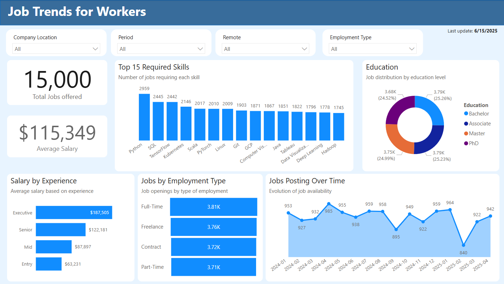

Job trends for workers
This dashboard is divided into three main parts: Data, Modeling & Connections, and Reports.
1. Data
- The data was imported from a .csv file (f_job_dataset table).
- Due to the manageable file size, all data transformations were performed directly within Power BI.
- The skills column contains the required skills for each job.
-
To handle this efficiently:
- A new table, f_job_skills, was created by duplicating f_job_dataset and keeping only the job_id and skills columns.
- In f_job_skills, the skills column was split by commas, with each skill placed on a new row. This separation prevents the main table from growing unnecessarily and improves data organization.
- A d_calendar table was also created to manage date-related fields.
-
This prevents Power BI from auto-generating a separate date table for each datetime column, reducing memory usage and improving performance.
- Two additional dimension tables were added to improve readability in the reports:
- d_experience: Maps acronyms in the experience_level column to readable names (e.g., EN = Entry Level).
- d_type_employment: Similar to d_experience, this table translates abbreviations for employment types (e.g., FT = Full-Time).
2. Data Model & Relationships
- The model follows a star schema, with fact and dimension tables:
- Fact table: f_job_dataset, f_job_skills
- Dimension tables: d_calendar, d_experience, d_type_employment
- This design improves report performance and simplifies relationship management.
3. Reports
- A consistent color palette was used to ensure a clean and visually appealing interface.
- Reports were designed to help users plan their personal and professional development based on job market insights.
- The layout follows a Z-pattern:
- Key insights are placed in the top-left.
- The viewer’s attention flows from left to right, then top to bottom.
- All visuals are fully interactive:
- Selecting any element in a visual will filter the other charts accordingly.
- Global filters are fixed at the top, just below the dashboard title:
- These filters allow users to refine data even when certain fields aren't shown directly in the charts.
- The last data refresh date is displayed at the top right, so users are always aware of how up-to-date the information is.